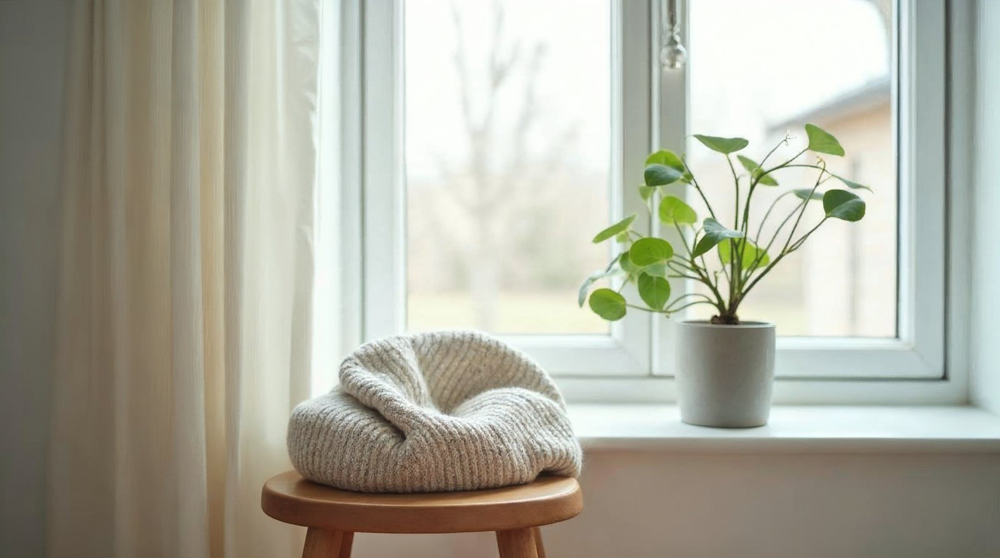
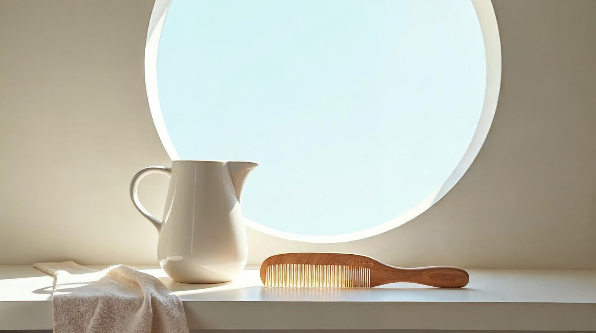

이종호 한의사 감수좋은꿈참사랑한의원 대표원장 (한의사 면허번호 19769)발행 2026-11-26 · 수정 2026-11-27
이 글의 차례
아침에 머리를 말리다 거울 속 뒤통수 쪽에 하얀 동그라미 하나가 보이는 날이 있어요. 미용실에서 "여기 빈 데가 있으세요"라는 말을 듣고서야 알게 되는 분도 많고요. 손가락으로 만져 보면 매끈한 두피가 그대로 느껴지고, 그 순간부터 머리를 감을 때마다 빠진 머리카락을 세게 되죠.
진료실에서 이런 말씀을 자주 들어요. "사람들이 제 머리만 보는 것 같아요." 모자를 쓰고 다니게 되고, 바람 부는 날이 싫어지고, 사진 찍는 자리를 피하게 됩니다. 머리카락 몇 가닥의 문제가 아니라 하루의 마음이 걸린 문제라는 걸 저도 잘 알아요.
원형 탈모는 머리카락이 동전 모양으로 둥글게 빠지는 상태예요. 우리 몸의 면역이 무슨 이유에선가 모낭을 공격하면서 생기는 것으로 알려져 있거든요. 그런데 모낭 자체가 없어지는 건 아니어서, 시간이 지나며 다시 머리카락이 나는 경우도 많아요.
그러니까 사실은 두 가지를 나눠서 보셔야 해요. '머리카락이 빠진 것'과 '모낭이 사라진 것'은 다른 얘기거든요. 빈자리가 보여도 뿌리는 그 자리에 남아 있는 경우가 많다는 뜻이에요.
그래도 저는 "금방 나요" 하고 쉽게 말씀드리지 않아요. 사람마다 흐름이 다르고, 여러 군데로 번지거나 오래가는 경우도 있으니까요. 그래서 피부과 진료는 그대로 받으시면서, 한의원에서는 잠과 피로, 긴장 같은 몸의 사정을 함께 살피자고 권해요.
원형 탈모는 겉으로 드러나는 자리라 몸보다 마음이 먼저 지치는 경우가 많아요. 그래서 저는 머리 얘기만큼 그동안 마음이 어떠셨는지도 꼭 여쭙습니다.
왜 원형 탈모가 생길까요
머리카락은 모낭이라는 작은 주머니에서 자랍니다. 원형 탈모에서는 몸의 면역 세포가 이 모낭을 낯선 것으로 잘못 여기고 건드려, 자라던 머리카락이 갑자기 성장을 멈추고 빠지는 것으로 알려져 있습니다.
왜 면역이 그렇게 반응하는지는 아직 다 밝혀지지 않았습니다. 체질과 유전이 바탕에 있고, 큰 스트레스나 몸살, 출산, 수면 부족 같은 일이 계기가 되는 경우가 있다고 이야기됩니다. 다만 뚜렷한 계기 없이 생기는 경우도 많아, 스스로를 탓하실 필요는 없습니다.
원형 탈모가 있는 분은 갑상선 질환, 아토피 피부염, 백반증 같은 다른 면역 관련 상태를 함께 가진 경우가 비교적 흔하다고 알려져 있습니다. 그래서 피부과나 내과에서 갑상선 검사 등을 권받는 경우가 있습니다.
한의학에서는 머리카락을 '혈의 여분'이라 하여, 피와 기운이 넉넉하고 잘 돌아야 머리카락도 윤기 있게 자란다고 보아 왔습니다. 그래서 저는 두피만이 아니라 잠과 식사, 피로의 정도, 월경이 있는 분이라면 그 흐름까지 함께 여쭙습니다.
다른 탈모와는 어떻게 다를까요
머리카락이 빠진다고 모두 원형 탈모는 아닙니다. 모양과 속도에 따라 원인이 다르고, 먼저 가야 할 곳도 달라집니다.
휴지기 탈모
큰 몸살이나 출산, 급격한 다이어트, 큰 스트레스를 겪고 두세 달쯤 지나 머리카락이 전체적으로 한 움큼씩 빠지는 경우입니다. 한 곳이 비는 것이 아니라 머리숱이 전반적으로 줄어드는 느낌이 특징입니다.
남성형·여성형 탈모
이마 양옆이나 정수리부터 머리카락이 가늘어지며 몇 해에 걸쳐 천천히 진행됩니다. 갑자기 동그랗게 비는 원형 탈모와는 흐름이 다릅니다.
두피 염증과 함께 오는 탈모
두피가 붉고 가렵거나 각질과 고름이 있으면서 머리카락이 빠진다면 곰팡이 감염이나 다른 두피 질환일 수 있습니다. 빠진 자리에 흉터처럼 반들반들한 피부가 남는지도 원형 탈모와 구분하는 단서가 됩니다.
머리카락을 뽑는 습관
긴장할 때 무의식적으로 머리카락을 뽑는 습관이 있으면 모양이 고르지 않은 빈자리가 생기기도 합니다. 이때는 습관을 부드럽게 알아차리고 마음의 긴장을 함께 살피는 것이 필요합니다.

원형 탈모를 마주할 때 마음가짐
원형 탈모는 흐름이 사람마다 다릅니다. 한 군데 생겼다가 몇 달 지나 솜털이 나오며 채워지는 경우도 있고, 다른 곳에 새로 생기기도 하며, 오래 이어지는 경우도 있습니다. 그래서 처음 몇 달은 '번지는지, 멈췄는지, 채워지는지'를 차분히 지켜보는 시기입니다.
새 머리카락은 처음에 가늘고 하얗거나 색이 옅게 나오는 경우가 많습니다. 그 솜털을 보고 실망하시는 분도 있는데, 시간이 지나며 굵어지고 색이 돌아오는 경우가 흔하니 조급해하지 않으셨으면 합니다.
거울을 너무 자주 들여다보면 하루에도 마음이 몇 번씩 오르내립니다. 일주일에 한 번, 같은 조명에서 같은 각도로 사진을 찍어 두는 정도가 마음에도 기록에도 좋습니다. 매일 확인하는 대신 일주일 단위로 보시길 권합니다.
가족이나 가까운 사람에게 털어놓는 것도 생각보다 큰 힘이 됩니다. 숨기려 애쓰는 데 드는 마음이 줄어들면, 그만큼 잠과 식사를 챙길 여유가 생깁니다. 직장이나 학교에서 말하기 어렵다면 굳이 설명하지 않으셔도 됩니다. 말할지 말지는 온전히 본인이 정하시면 됩니다.
주변에서 듣는 말들, 이렇게 걸러 들으세요
원형 탈모가 생기면 여기저기서 이야기가 들려옵니다. 생강을 문질러 보라거나, 특정 샴푸를 써 보라거나, 검은 음식을 많이 먹으라는 말도 있습니다. 걱정해 주는 마음은 고맙지만, 두피에 자극이 강한 것을 바르면 오히려 빈자리가 붉게 덧날 수 있습니다.
인터넷에서 본 영양제를 한꺼번에 여러 가지 챙겨 드시는 분도 계십니다. 철분이나 비타민 D처럼 부족한 것이 확인되었다면 채우는 것이 의미가 있지만, 확인 없이 여러 가지를 겹쳐 드시면 간과 위에 부담이 될 수 있습니다. 드시는 것은 모두 적어 와 주세요.
두피 마사지 기구로 빈자리를 세게 두드리는 것도 권하지 않습니다. 원형 탈모 자리는 면역 반응이 일어나고 있는 곳이라, 세게 자극하기보다 조용히 두는 편을 권합니다.
새로운 방법을 해 보고 싶으시다면 혼자 시작하기 전에 진료 때 한 번 물어봐 주세요. 괜찮은 것인지, 지금 받는 치료와 부딪히지 않는지 함께 따져 보겠습니다. 급한 마음에 이것저것 바꾸면 무엇이 맞았고 무엇이 맞지 않았는지 알기도 어려워집니다.
피부과 치료와 함께 가는 법
피부과에서는 빈자리의 크기와 개수, 진행 속도에 따라 바르는 약이나 국소 주사 같은 치료를 권하는 경우가 많습니다. 범위가 넓으면 다른 치료를 상의하기도 합니다. 어떤 치료를 받든 그 내용을 한의원 진료 때 알려 주시면 함께 맞춰 볼 수 있습니다.
두 곳을 다니는 것이 번거로우실 수 있습니다. 그래도 피부과에서는 두피를 직접 보고 치료하고, 한의원에서는 그 두피를 가진 몸의 잠과 피로를 살피는 식으로 역할이 나뉘면 서로 겹치지 않습니다. 진료 날짜를 적은 작은 수첩 하나면 충분합니다.
예를 들면 이런 경우입니다
실제 어느 분의 사연이 아니라, 진료실에서 자주 보는 모습을 바탕으로 그려 본 장면입니다.
예를 들어 큰 시험이나 업무 마감을 앞두고 잠을 크게 줄인 시기에 원형 탈모를 발견한 분이라면, 먼저 피부과 진료를 받으셨는지 확인하고 그다음 잠드는 시각과 식사 리듬부터 함께 봅니다. 시험이 끝날 때까지 무엇을 지킬 수 있을지 하나만 정합니다.
출산 뒤 몇 달 사이 머리숱이 전반적으로 줄면서 한 곳이 동그랗게 비었다는 분이라면, 휴지기 탈모와 원형 탈모가 겹쳐 있는지 피부과에서 확인받으시도록 안내합니다. 회복기에 잠과 식사를 어떻게 챙길 수 있을지 같이 이야기합니다.
집안의 큰일을 치르며 마음을 쏟은 뒤 생겼다는 분이라면, 머리 이야기보다 그동안 어떻게 지내셨는지를 먼저 듣습니다. 그 시간을 지나온 몸이 지금 어디가 가장 지쳐 있는지를 맥과 함께 살핍니다.

두피를 대하는 하루의 작은 습관
머리를 감고 나서 수건으로 세게 비비거나, 젖은 머리를 묶은 채 잠드는 습관은 두피와 머리카락에 부담이 됩니다. 수건으로 꾹꾹 눌러 물기를 빼고, 드라이어는 미지근한 바람으로 두피에서 조금 떨어뜨려 말려 주세요.
빗질도 세게 하기보다 끝이 둥근 빗으로 가볍게 하시길 권합니다. 빈자리를 자꾸 손으로 만져 확인하는 습관이 생겼다면, 그 손을 다른 곳에 두는 연습부터 해 보셔도 좋습니다.
먼저 이렇게 여쭙니다
원형 탈모로 오시면 대략 이런 순서로 여쭙니다.
- 처음 발견한 때는 언제이고, 몇 군데에 어느 정도 크기인가요?
- 크기가 커지거나 새로운 자리가 생기고 있나요?
- 눈썹, 속눈썹, 수염, 몸의 털도 빠지나요? 손톱에 작은 홈이 생겼나요?
- 피부과에서 받은 진단과 치료는 무엇인가요?
- 갑상선 질환, 아토피, 백반증 같은 다른 진단을 받으신 적이 있나요?
- 요즘 잠과 식사, 피로, 마음의 부담은 어떤가요?
이전에도 원형 탈모가 있었다면 그때 어떻게 지나갔는지도 알려 주세요. 지난 흐름을 알면 이번을 바라보는 마음이 조금 편해지기도 합니다.
일상에서 먼저 해 볼 수 있는 것
생활 습관만으로 원형 탈모가 사라진다고 말씀드리기는 어렵습니다. 다만 두피와 몸을 덜 지치게 하는 일은 피부과 치료와 함께 해 볼 수 있습니다.
- 잠드는 시각과 일어나는 시각을 일정하게 맞추고, 수면 시간 확보하기
- 끼니를 거르지 않고 단백질 반찬을 한 가지씩 챙기기
- 머리를 감을 때 손톱이 아닌 손가락 끝으로 부드럽게 씻고, 뜨거운 바람으로 오래 말리지 않기
- 빈자리를 가리려 머리를 세게 묶거나 당기지 않기
- 염색·파마는 빈자리 주변을 자극하지 않도록 피부과와 상의 뒤에 하기
- 일주일에 한 번 같은 조건에서 사진 찍어 두기
모자나 가발, 부분 가발을 쓰는 것도 괜찮습니다. 두피가 답답하지 않게 통풍만 신경 쓰시면 됩니다. 남들 시선이 신경 쓰여 바깥 활동을 피하게 되면 마음은 더 움츠러듭니다. 마음이 편한 쪽을 고르시면 됩니다.
머리카락은 한 달에 1센티미터 남짓 자란다고 알려져 있습니다. 그래서 오늘 한 일이 머리에 보이기까지는 몇 달이 걸립니다. 서두르지 않고 같은 습관을 꾸준히 이어 가는 것이 이 시기의 가장 큰 일입니다.
한의원에서 함께 살필 수 있는 경우
- 피부과 치료를 받으면서 잠과 피로, 긴장을 함께 살피고 싶은 경우
- 큰 일을 겪은 뒤 몸이 전반적으로 지쳐 있고 소화와 잠이 같이 흔들리는 경우
- 원형 탈모가 반복되어 생활 리듬을 다시 점검하고 싶은 경우
- 탈모 때문에 마음이 위축되고 잠을 설치는 날이 많은 경우
좋은꿈참사랑한의원에 처음 오시면 모든 분의 맥을 먼저 짚고, 아래 '먼저 확인이 필요한' 신호가 없는지 봅니다. 맥을 짚으며 잠과 소화, 체온, 대소변, 월경이 있는 분이라면 그 흐름까지 여쭙니다.
진찰을 마치면 상태에 맞춰 침 치료나 한약 상담이 필요한지 함께 정합니다. 한약을 상의할 때는 피부과 약과 드시는 약을 확인하며 신중하게 정합니다. 원형 탈모의 진단과 바르는 약·주사 같은 치료는 피부과의 몫이라, 피부과 진료는 이어 가시도록 안내합니다.
다시 오시면 지난번 이후 빠진 자리가 어떻게 바뀌었는지, 정한 생활 목표 하나는 지킬 만했는지부터 이어서 듣습니다. 머리카락은 자라는 데 시간이 걸리니, 몇 주 단위가 아니라 몇 달 단위로 함께 보아 가려 합니다.
진료실에서는 사진을 나란히 놓고 지난번과 비교해 봅니다. 혼자 볼 때는 달라진 게 없어 보여도, 몇 주 간격의 사진을 함께 보면 솜털이 올라오는 자리나 멈춘 자리가 눈에 들어오기도 합니다. 그 작은 변화를 같이 찾아보는 시간이 마음을 버티게 해 줍니다.
이렇게 기록해 오시면 상담이 쉬워집니다
거울로 매일 들여다보면 오히려 변화가 잘 안 보여요. 원래 그래요. 날마다 보는 얼굴이 변하는 줄 모르는 것처럼요. 일주일에 한 번, 같은 자리에서 찍은 사진이 훨씬 정직하거든요.
- 빠진 자리 사진(일주일에 한 번, 같은 조명·각도)
- 빠진 자리의 개수와 대략의 크기
- 피부과 진단과 치료 내용, 바르는 약 이름
- 잠든 시각과 깬 시각, 밤에 깬 횟수
- 큰 일이나 몸살, 다이어트처럼 최근 몇 달 사이의 변화
- 갑상선 검사 등 받은 혈액검사 결과가 있다면 그 결과지
몸을 살피는 건 제가 맡을게요. 대신 하나만 부탁드려요. 거울 앞에서 몇 번이고 머리를 넘겨 보던 걸, 일주일에 한 번 사진 한 장으로 바꿔 주세요. 딴 건 하시던 대로 편하게 하셔도 돼요.
그동안 얼마나 마음을 졸이셨을까 싶어요. 서두르지 않고, 몸이 덜 지치도록 하루를 같이 정리해 봐요. 다음에 오시면 지난번 찍어 두신 사진부터 함께 보고, 궁금하신 건 그때 편하게 물어보세요.
이런 증상은 먼저 확인이 필요합니다
- 빠진 자리가 빠르게 번지거나 눈썹·몸의 털까지 함께 빠지는 경우
- 빠진 자리가 붉게 붓고 아프거나 고름이 생기고 흉터처럼 남는 경우
이런 신호가 있으면 한의원보다 가까운 병원이나 응급실을 먼저 찾으세요.
함께 읽으면 좋은 글
- 큰 스트레스나 몸살 뒤 몇 달 지나 머리카락이 한 움큼씩 빠질 때는 어떻게 살피나요?
- 두피에 비듬이 많고 가렵고 붉을 때는 어떻게 살피나요?
- 잠이 부족하면 피부가 푸석하고 트러블이 나는 이유는 무엇인가요?
- 충분히 쉬어도 몸이 늘 피곤한 만성피로는 어떤 점을 살펴보나요?

여쭙는 것
- 처음 발견한 때는 언제이고, 몇 군데에 어느 정도 크기인가요?
- 크기가 커지거나 새로운 자리가 생기고 있나요?
- 눈썹, 속눈썹, 수염, 몸의 털도 빠지나요? 손톱에 작은 홈이 생겼나요?
생활에서 해 볼 것
- 잠드는 시각과 일어나는 시각을 일정하게 맞추고, 수면 시간 확보하기
- 끼니를 거르지 않고 단백질 반찬을 한 가지씩 챙기기
- 머리를 감을 때 손톱이 아닌 손가락 끝으로 부드럽게 씻고, 뜨거운 바람으로 오래 말…
한의원에서 함께 살필 것
- 피부과 치료를 받으면서 잠과 피로, 긴장을 함께 살피고 싶은 경우
- 큰 일을 겪은 뒤 몸이 전반적으로 지쳐 있고 소화와 잠이 같이 흔들리는 경우
- 원형 탈모가 반복되어 생활 리듬을 다시 점검하고 싶은 경우
먼저 확인이 필요한 신호
- 빠진 자리가 빠르게 번지거나 눈썹·몸의 털까지 함께 빠지는 경우
- 빠진 자리가 붉게 붓고 아프거나 고름이 생기고 흉터처럼 남는 경우
한눈에 보는 표
| 구분 | 핵심 |
|---|---|
| 여쭙는 것 | 처음 발견한 때는 언제이고, 몇 군데에 어느 정도 크기인가요? 크기가 커지거나 새로운 자리가 생기고 있나요? |
| 생활에서 해 볼 것 | 잠드는 시각과 일어나는 시각을 일정하게 맞추고, 수면 시간 확보하기 끼니를 거르지 않고 단백질 반찬을 한 가지씩 챙기기 |
| 한의원에서 함께 살필 것 | 피부과 치료를 받으면서 잠과 피로, 긴장을 함께 살피고 싶은 경우 큰 일을 겪은 뒤 몸이 전반적으로 지쳐 있고 소화와 잠이 같이 흔들리는 경우 |
| 먼저 확인이 필요한 신호 | 빠진 자리가 빠르게 번지거나 눈썹·몸의 털까지 함께 빠지는 경우 빠진 자리가 붉게 붓고 아프거나 고름이 생기고 흉터처럼 남는 경우 |
자주 묻는 질문
원형 탈모는 스트레스 때문에 생기나요?
큰 스트레스나 수면 부족이 계기가 되는 경우가 있다고 알려져 있지만, 뚜렷한 계기 없이 생기기도 합니다. 면역이 모낭을 건드리는 것이 중심이라, 스스로를 탓하실 필요는 없습니다.
피부과 치료를 받고 있는데 한의원 진료를 같이 받아도 되나요?
네. 피부과 진단과 바르는 약, 주사 치료 내용을 알려 주시면 확인한 뒤 상담합니다. 피부과 치료는 그대로 이어 가시도록 안내합니다.
원형 탈모가 다른 사람에게 옮나요?
원형 탈모는 감염이 아니어서 옮지 않는 것으로 알려져 있습니다. 두피가 붉고 각질과 고름이 있는 경우는 원형 탈모와 다른 이야기라 피부과에서 구분을 받아 보세요.
새로 난 머리카락이 하얀데 괜찮은가요?
원형 탈모 자리에 처음 나는 머리카락은 가늘고 색이 옅은 경우가 많고, 시간이 지나며 굵어지고 색이 돌아오는 경우가 흔합니다. 걱정되시면 사진을 찍어 피부과 진료 때 보여 주세요.
머리를 자주 감으면 더 빠지나요?
감을 때 빠지는 머리카락은 이미 빠질 준비가 된 것이어서, 감는 횟수 자체가 원형 탈모를 키운다고 보기는 어렵습니다. 두피를 손톱으로 긁지 말고 부드럽게 씻어 주세요.
좋은꿈참사랑한의원은 재진 때 지난번 이야기부터 이어서 여쭙니다. 진료시간과 예약은 오시는 길에서 확인하세요.
어디서 상담받을 수 있나요?
좋은꿈참사랑한의원은 서울 동작구 만양로2길 2 신성빌딩 3층·5층(서울 동작구 상도동, 7호선 상도역 3번 출구 근처)에 있습니다. 한의사 3명(이종호 대표원장, 조영기 수석진료원장, 정원영 진료원장)이 진료합니다. 진료시간은 평일 09:30~20:00(점심 13:00~14:00), 토·일·공휴일 09:30~15:00이며, 방문 전 전화로 확인을 권합니다. 예약은 네이버 예약, 카카오톡 상담, 전화 02-815-7510로 받습니다.
이 글은 일반적인 건강 정보이며 개인의 진단이나 치료를 대신하지 않습니다. 증상이 있거나 복용 중인 약이 있다면 진료를 통해 확인하세요. 치료 효과는 개인마다 다를 수 있습니다.
작성 기준: 일반적으로 알려져 있는 건강 정보를 참고해 정리했습니다(대표원장 감수). 증상 기록은 1~2주 동안 하루 1회, 비슷한 시간에 적어 오시면 지난 상태와 비교하기 쉽습니다.